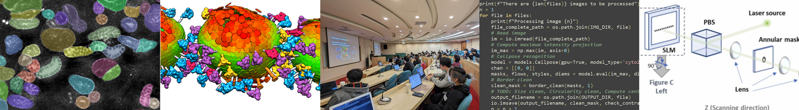
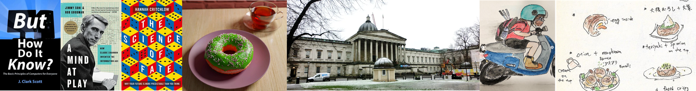

Hello!
I am Kou (Cheng-Yu Huang), a PhD researcher at the University of Cambridge in the lab of Julija Krupic. My work focuses on analysing neuronal representation in hippocampus and animals' spatial navigation behaviour, using computational and data-driven approaches. I am particularly interested in the intersection of data and mathematical modelling, and application of statistical inference tools to uncover the unobservable states of the biological systems.
{kind=link}
{kind=link}

Background
Kou is my Japanese name; I was born in Japan and grew up in Taiwan. I studied at University College London (UCL) and graduated with First Class Honours in Natural Sciences (physics and cell biology) in 2020. I have worked in various bioimaging labs, including the ones in cryoEM/ET, SMLM, light-sheet and expansion microscopy.
During my time in Cambridge I developed an interest in Neurosciences, upon which I joined the lab of Dr Julija Krupic, to dive deeper into the field of cellular neurosciences of spatial navigation.
Outside research, I am also invested in teaching:
Undergraudate Teaching
Alongside my PhD, I supervised undergraduate students during term time. Supervision is a small-group teaching format focused on discussion and problem-solving. I taught two third-year Engineering courses: Statistical Signal Processing (3F3) and Inference (3F8), guiding students through key concepts and supporting their learning in a more interactive setting.
Workshops
Bioimage analysis is a core skill for many biologists, yet it is rarely part of formal training. What began as a small training programme for my wife grew into a series of workshops that have since been delivered at research institutes and universities across Taiwan and Japan (2022-2025). These workshops are typically two days long and guide participants from the basics of Python programming to the principles of digital image processing, with hands-on experience using the Napari ecosystem. In 2024, I presented this work at the GLOBiAS conference, highlighting both the training approach and its impact.
Publications
📃 Lu, C.-H., Huang, C.-Y. et al. Large-scale expanded sample imaging with tiling lattice lightsheet microscopy. Int. J. Biochem. Cell Biol., 154, 106340 (2023)
📃 Huang, CY., Draczkowski, P., Wang, YS. et al. In situ structure and dynamics of an alphacoronavirus spike protein by cryo-ET and cryo-EM. Nat Commun 13, 4877 (2022)
{kind=link}

Other Interests
I enjoy reading, writing, cooking, and creating art.
Visit the following pages for more details: